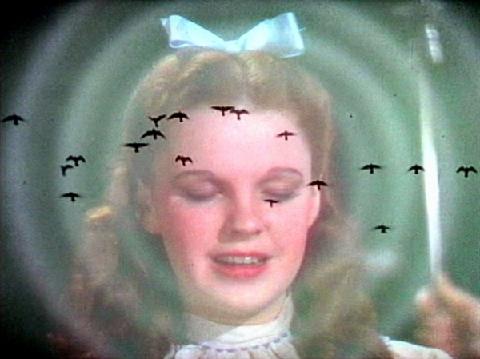
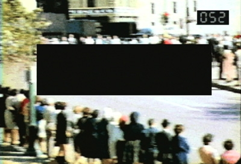

-
The Reanimator: Keith Sanborn’s “Modern, all too modern”
by Giampaolo Bianconi January 25, 2013
Mirror (Keith Sanborn, 1999)
In May 1989, on the occasion of the International Experimental Film Congress in Toronto, a group of filmmakers released their “Open Letter to the Experimental Film Congress,” denouncing the event and its focus on “representatives of the 60s Avant-Garde and its decaying power base.”1 Many of the most important filmmakers and programmers of the 80s and 90s, including Peggy Ahwesh, Craig Baldwin, Todd Haynes, Mark McElhatten, and Keith Sanborn, signed the letter.2
A year before, Sanborn’s manifesto, “Modern, all too modern,” appeared in the third volume of Cinematograph: A Journal of Art and Media, published by the San Francisco Cinematheque. While more expansive in its breadth, Sanborn’s manifesto presaged many of the concerns voiced in next year’s “Open Letter”. Presented as a series of numbered paragraphs of various length, “Modern, all too modern” is a wily synthesis of Sanborn’s interests and sensibilities, coupled with a D.I.Y. clarion call that would come to fruition in the 90s. Echoing William Wees’ statement in regard to the 1989 “Open Letter,” I would like to emphasize that it is not the accuracy of specific propositions that require nitpicking, but the attempt to enunciate the ambitions and situation of experimental film at the end of the 80s that deserves attention.3
In section 8, Sanborn suggests,
The death of the avant-garde coincides with the death of modernism. For film, that was sometime between 1973 and 1978, at the latest, though the five year span a decade earlier suggests itself as well. Unfortunately, it was only in 1987 that the voice of the critics began to register any notice.
The reference to “the critics” is to two twin pieces of criticism that heralded the death of a cinematic avant-garde: Fred Camper’s “The End of Avant-Garde Film,” which appeared in Millennium Film Journal, and J. Hoberman’s Village Voice review of the film and video work that appeared in the 1987 Whitney Biennial. Camper’s article protested, “[w]orks of the new generation of filmmakers for the most part lack the authentic power of the original, and often still-active masters,”4 while Hoberman observed that “the movement seems moribund.”5
The Zapruder Footage: an Investigation of Consensual Hallucination (Keith Sanborn, 1999)
Sanborn’s deflection of these melancholic critiques emphasizes their nearsightedness. It is precisely against this spirit of death and subsequent enshrinement that “Modern, all too modern” sets its sights. The production of what Camper referred to as “original masters” created an ossified, historical film avant-garde while labeling contemporary work as deviant without recognizing this new work’s rereading of, and response to, previous aesthetic strategies.
As such, it makes sense that in “Modern, all too modern” Sanborn takes aim at the shortcomings of Visionary Film, the ultimate “master narrative” of American experimental film. Yet the aim of Sanborn’s writing is not the perpetual reassessment of certain reductive critical models. It is, instead, a call to arms: “The time has long passed for looking to the Sitneys, the Taubins, the Campers and the Hobermans of the world for intelligent critical response to film or anything else,” he writes. “Start your own magazine. Write your own reviews. Build your own audience. If there is a cinema of resistance that perseveres in the midst of the wake for modernism and the ‘avant-garde’ then it must speak with its own voice or not at all.” For Sanborn, the locus of “its own voice” lies in the recovery of suppressed or mischaracterized cinemas, to challenge official, authorized histories with radical insurgency.
To that end, “Modern, all too modern” investigates two cases of filmic extinction: Andy Warhol, who pulled his films from circulation in 1968, and Guy Debord, who by 1984 had withdrawn his films from distribution following his producer’s suspicious assassination. Their resuscitation is a cornerstone of the manifesto. Surveying the potential reasons for their self-dismissal, Sanborn notes the purity in keeping these films from entering the auspices of film history. For Sanborn’s Debord, “[o]ffering one’s life work to one’s contemporaries—let alone one’s historical successors—has all the attraction of binding and offering oneself for gang rape, vivisection and piecemeal transplantation.” The potential danger lies in subjecting them to years of critical abstraction and misunderstanding, whitewashing and subordinance to aesthetic-historical causality. In their stead, Sanborn argues, the void was filled with work that failed to critique, and even played into, the spectacle.
Warhol followed a similar route. After his attempted assassination by Valerie Solanas in 1968, Warhol not only recalled his films from distribution but also moved away from film production in general. Warhol had been in a unique position to profit from his films: many of his films were rented and screened across the country throughout the 1960s, and he was even jealous of the reverberations his films had in Hollywood. In some sense, Warhol’s refusal to maintain a profitable distributive network for his films impacted filmmakers who could have followed his model. To Sanborn, in 1988, Warhol and Debord’s removals—as opposed to their potential circulation—served as their own model: models of ghostliness instead of presence. Perhaps the films, made in and for a specific historical moment, should remain restricted to abandoned time.
While Warhol’s films’ continued distribution could have provided a more profitable blueprint for experimental filmmakers than the Film Maker’s Cooperative, their successes also relied on the ability of those films to traverse spaces as diverse as movie theaters, porno houses, student organizations, and film societies.6 Films that couldn’t inhabit such disparate spaces, however, remained restricted from greater viewership. At the time of Sanborn’s writing, similar divisions could be seen in the films identified with the cinema of transgression, which exhibited frequently throughout New York City clubs.7 At that time, Sanborn’s films didn’t traffic in that kind of subversive content so much as attempt to outline strategies for experimental film at a time when previous incarnations of the avant-garde were being accepted by the academy.
Sanborn suggests that the dark spaces left by these phantasmatic films were more harmful than intended. The disappearance of Debord’s work, especially, was filled in by spurious new talkie avant-gardism, epitomized by the “bourgeois Sunday-Maoist” practice of Godard. In “Modern, all too modern,” work taken for critique instead bears no trace of it. Sanborn’s characterization of Godard (like Baudrillard, against whom the final sections of “Modern, all too modern” take aim) as an American Frechman (“the Woody Allen of France”) and practitioner of watered-down Debordian tactics is an attempt to reinsert Debord’s film work into the critical consciousness of cinematic avant-gardism, both to resist Godard’s deification and challenge Baudrillard’s refutation of Debord’s Society of the Spectacle. Aside from Godard, Sanborn aligns these tendencies with the work of 80s marquee artists Barbara Kruger and Robert Longo, who, keeping with Baudrillard’s formulation, exploited a democratized, melancholy spectacle that “invests the whole of life with a mythical ambience.”
Debord’s invisibility, per Sanborn, “has deprived his contemporaries in France and abroad as well as his historical successors of the insights his work might offer.” Here, Sanborn’s insistence on Framptonian metahistory becomes apparent not merely as the foraging of a personal aesthetic lineage, but also in its righting, utopian function. “The metahistorian of cinema,” writes Frampton, “is occupied with inventing a tradition…a coherent, wieldy set of discreet monuments, meant to inseminate resonant consistency into the growing of his art. Such works may not exist, and it is his duty to make them.”8 The self-imposed scarcity of Warhol and Debord’s films at the time makes plain their potential for metahistorical realignment.
In its attitude against contemporaneous avant-garde obituaries and reemphasis on Warhol and Debord, and also its challenge to the overwhelming sanitization of Leni Reifenstal, Sanborn’s manifesto is an explicitly metahistorical protest against received forms of avant-garde history and their future development. Its urge, above all, is that these histories are too precious to be mutilated by a few institutions and individuals: artists creating their own historiographies must perpetuate them. This, of course, concerns not only Warhol and Debord but also to Carolee Schneeman, Joyce Weiland, Chick Strand, Yvonne Rainer, Esther Shub, Anne Severson, and numerous other filmmakers expunged by modernism’s exclusionary critical logic.
Toward the end of “Modern, all too modern”, Sanborn muses, “History refuses to be subjugated to literature. It has a way of leaking out around the edges, trickling down the bindings onto the shelves, and staining the library floor. Someone notices sooner or later. It returns where repressed and with a vengeance.” Sanborn’s history not only returns but is redeemed: the proliferation of microcinema spaces throughout the 90s continues into the present, and Sanborn’s concerns and critiques of avant-garde historiography have only been amplified since his writing.
- The full letter appears in: William C. Wees. “‘Let’s Set the Record Straight’: The International Experimental Film Congress, Toronto 1989.” Canadian Journal of Film Studies/Revue Canadienne d’études cinématographiques. Vol. 9 No. 1, Spring 2000. 101-116. [↩]
- In an endnote, Wees clarifies: “The principal author of the Open Letter was Keith Sanborn, working in collaboration with Peggy Ahwesh, Leslie Thornton and Ross MacLaren.” Ibid. [↩]
- Wees: “The accuracy of its charges … is less important today that its attempt to articulate—in aggressive, manifesto rhetoric—the ambitions, priorities and allegiances of the generation of experimental filmmakers who came into their own during the 1980s.” Ibid. [↩]
- Fred Camper. “The End of Avant-Garde Film.” Millennium Film Journal, Issue No. 16/17/18 (Fall/Winter 1986-87). 99-124. [↩]
- J. Hoberman. “Fear and Trembling at the Whitney Biennial.” In Vulgar Modernism: Writing on Movies and Other Media. Philadelphia: Temple University Press, 1991. [↩]
- These are all spaces recognized by Tony Conrad in reference to his and Beverly Grant’s 1970 film Coming Attractions. For a substantive discussion of that film and further context surrounding divisions between and surrounding avant-gardes, see Branden W. Joseph, The Roh and the Cooked: Tony Conrad and Beverly Grant in Europe. Additionally, many Warhol films played in legitimate theaters, porn theaters, and college campuses. [↩]
- “On the East Coast, 80s filmmakers created exhibition spaces within the club culture of Manhattan. Spaces like ABC No Rio, Danceteria, the Pyramid, and numerous other served as temporary venues for filmmakers whose works were created outside of groups that were sometimes perceived as more traditionally cineaste.” These tensions are mentioned, among a more substantive discussion of DIY distribution during the 1990s, in Ed Halter’s “Head Space: Notes on the Recent History of a Self-Sustained Exhibition Scene for North American Underground Cinema,” in The Alternative to What? Thread Waxing Space and the 90s. [↩]
- “For a Metahistory of Film: Commonplace Notes and Hypothesis,” in On the Camera Arts and Consecutive Matters: The Writings of Hollis Frampton, Ed. Bruce Jenkins (Cambridge: The MIT Press, 2009). 131-139. [↩]